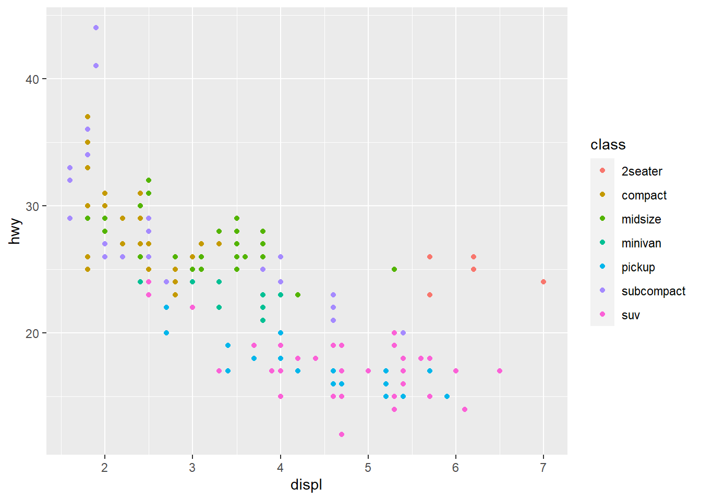
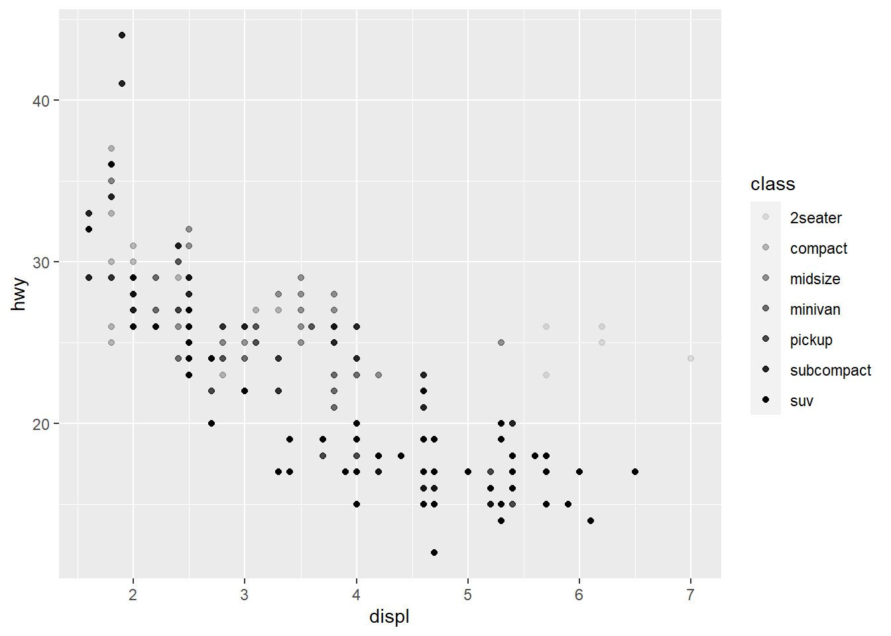
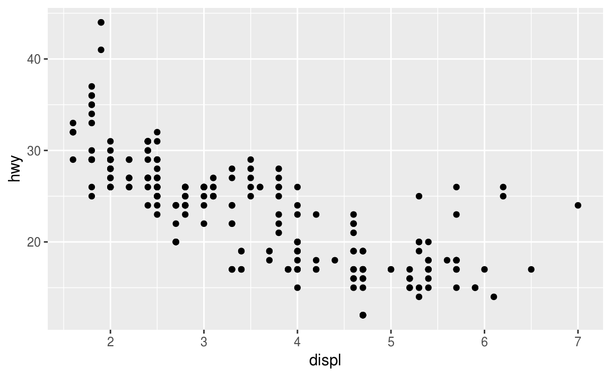
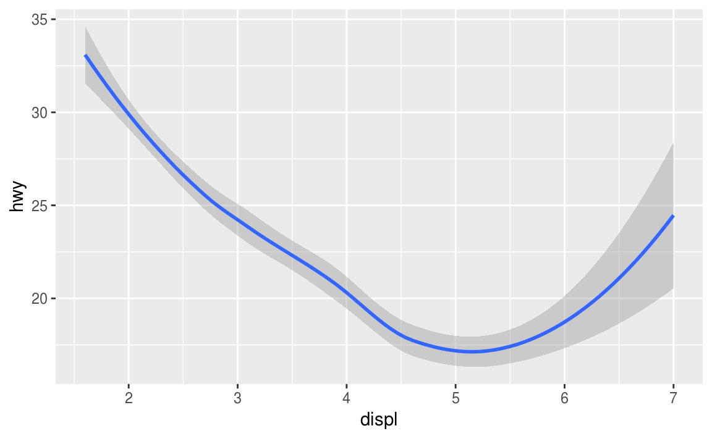
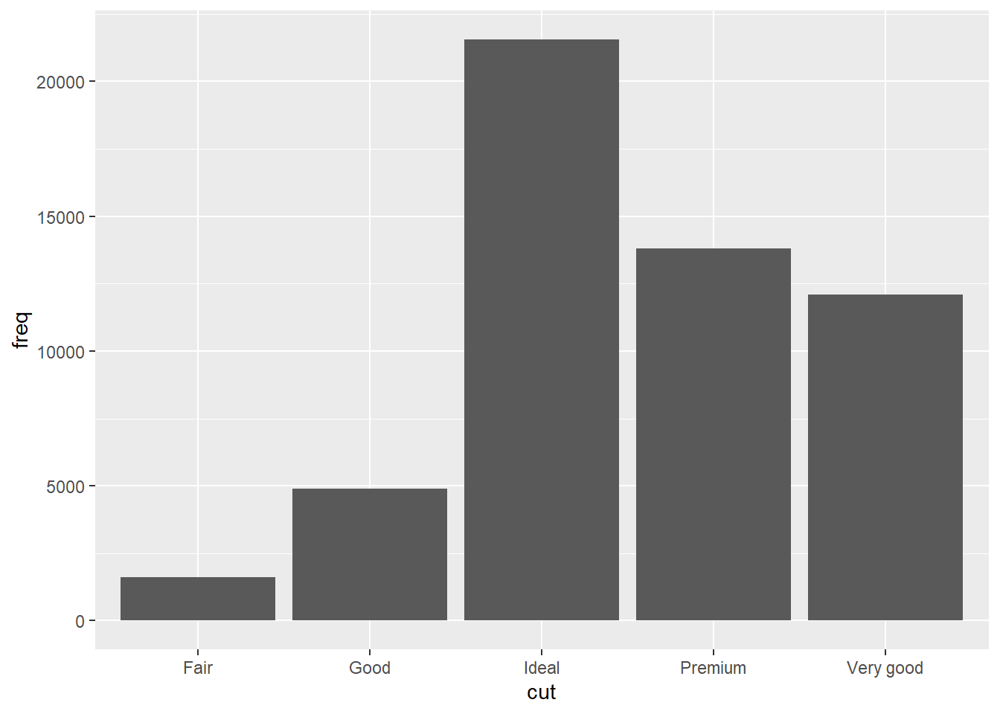
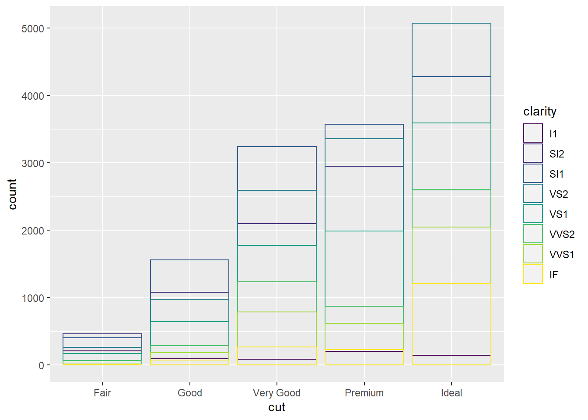
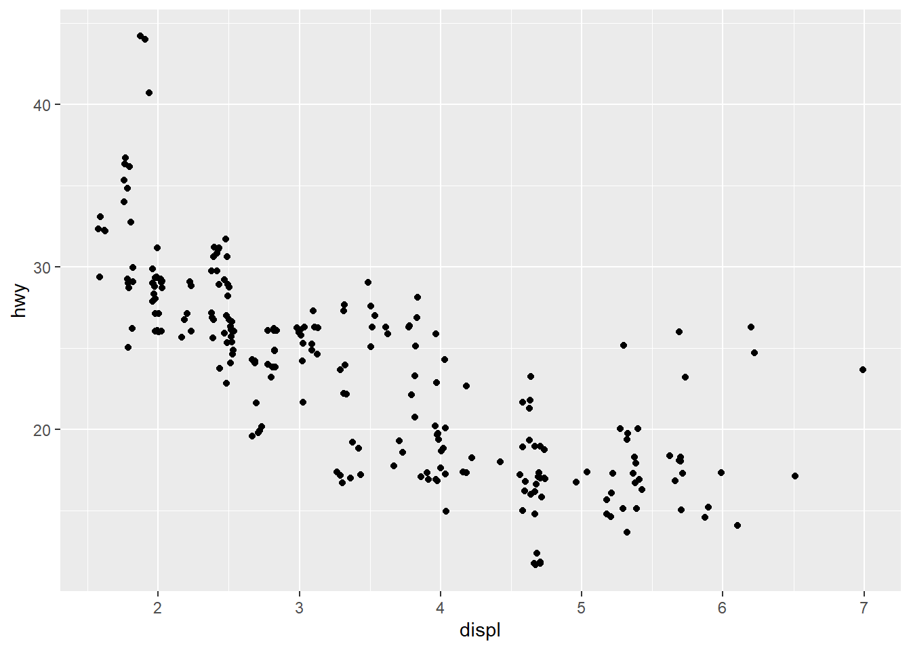
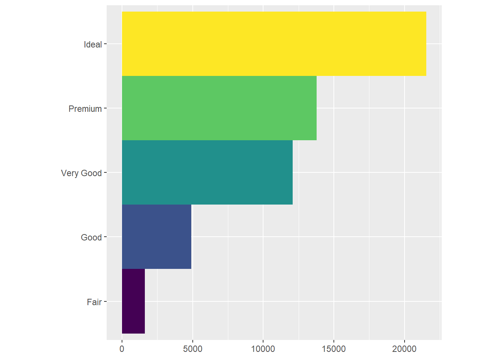
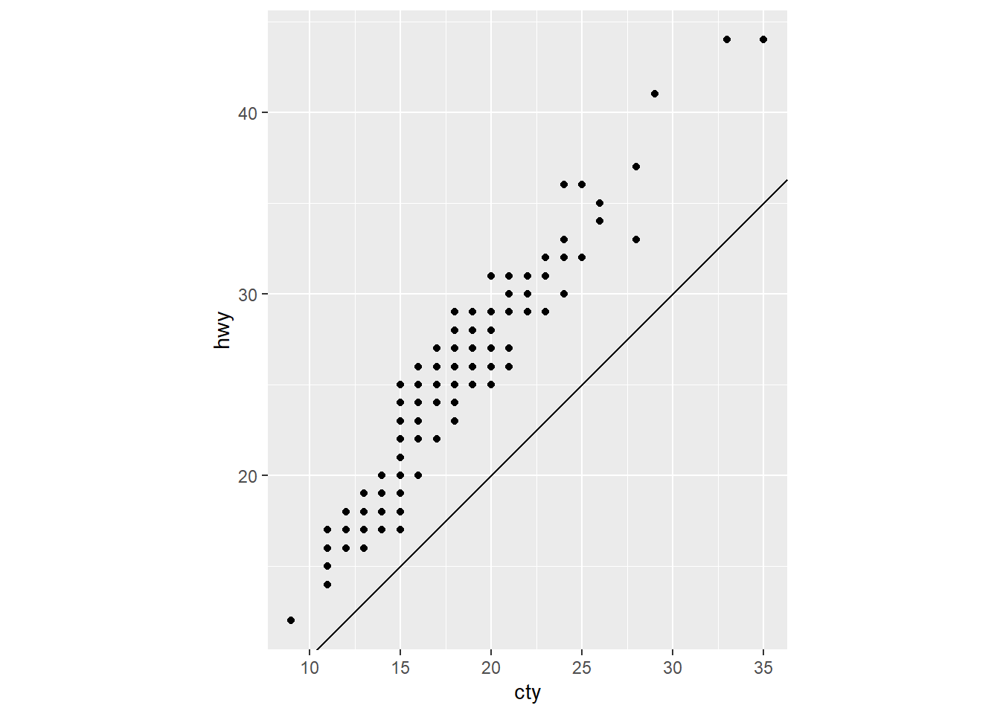
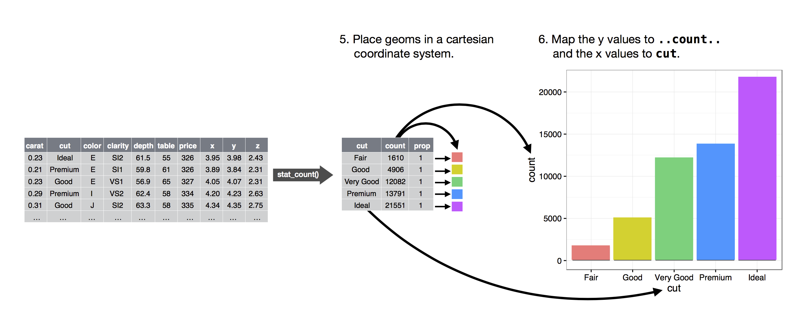

3 Visualisering
Att börja jobba med visualiseringsverktygen i R är ett bra sätt att lära sig R. Man får snabbt synlig feedback samtidigt som man får en känsla för programspråket.
Det finns ett omfattande grundläggande grafikhanteringssystem i R. Nackdelen är att det har en tämligen hög inlärningströskel, åtminstone då man vill framställa mer avancerade grafer. Vi ska därför använda en modernare modul, kallad ggplot2, vilket blivit populärt genom sin något lägre inlärningströskel och flexibilitet.
3.1 Ett första diagram
Vi börjar med att ladda in modulen tidyverse:
library(tidyverse)
Denna modul innehåller flera andra moduler som är användbara för att transformera och visualisera data. Låt oss göra ett diagram för att besvara frågan om bilar med större motorer förbrukar mer bränsle än bilar med mindre motorer. Tja, det kanske är uppenbart men hur ser sambandet ut mer i detalj? Är sambandet positivt eller negativt? Linjärt eller icke-linjärt?
3.1.1 Ladda data
Inbyggt i R finns ett antal färdiga dataset som man kan utnyttja för att lära sig olika moduler eller pröva olika analysmodeller. Bland annat finns i modulen ggplot2 (vilken laddas med tidyverse) ett dataset som innehåller information om olika bilmodeller, kallat mpg. Det är en data frame, i princip en tabell, med variabler i kolumner och de olika bilmodellerna i raderna. Vi kan se närmare på tabellen genom att ladda tabellen:
mpg
Det finns ett par olika sätt att få en överblick över datastrukturen.
- Genom att helt enkelt ange namnet på datamängden (
mpg) i konsolen och trycka ENTER. - Genom att klicka på pil-markören i rutan “Environment” uppe till höger. Då listas de 11 variablerna och beskriver typ av variabel (
chr= text;num= numerisk kontinuerlig;int= numerisk och diskret) samt de första värdena för respektive variabel. Notera att data-namnet kompletteras med en kort beskrivning av storleken av datamängden. - Genom att dubbelklicka på data-namnet i “Environment” upp till höger. Då öppnas tabellen som en flik uppe till vänster, i editorn.
Två av variablerna, displ och hwy, beskriver motorstorleken i liter resp bränsleeffektiviteten uttryckt i miles per gallon.
För att veta mer om datasetet kör man kommandot ?mpg. Det öppnar en hjälp-sida där datasetet beskrivs närmare, defintioner av variabler etc.
3.1.2 Skapa en ggplot
För att beskriva sambandet mellan motorstorlek och bränsleeffektivitet grafiskt sätter vi motorstorleken på x-axeln och bränsleeffektiviteten på y-axeln (När du kör kod - inkl nedanstående - får du ofta en hel del information förutom önskat output, t.ex. “warnings”, “conflicts”. Vi återkommer till nyttan med dessa.):
## -- Attaching packages ------------------------------------------------------------------------------------------------------------------------------------------ tidyverse 1.3.0 --## v ggplot2 3.3.2 v purrr 0.3.4
## v tibble 3.0.4 v dplyr 1.0.2
## v tidyr 1.1.2 v stringr 1.4.0
## v readr 1.4.0 v forcats 0.5.0## -- Conflicts --------------------------------------------------------------------------------------------------------------------------------------------- tidyverse_conflicts() --
## x dplyr::filter() masks stats::filter()
## x dplyr::lag() masks stats::lag()
Grafen visar som förväntat ett negativt samband mellan motorstorlek och bränsleeffektivitet - större motorer konsumerar mer bränsle.
Med ggplot2 börjar man med att konstruera en graf genom att ange funktionen ggplot(). Denna funktion skapar ett kordinatssytem till vilket man kan addera olika lager (layers). Det första argumentet i ggplot() anger vilken datamängd som ska användas.
Man kompletterar grafen genom att lägga till ett eller flera lager till ggplot(). I detta fall lägger vi till ett lager med hjälp av funktionen geom_point(). Denna funktion lägger till ett lager av punkter till koordinatsystemet, vilket skapar en scatterplot. Det finns en mängd olika typer av geom_* funktioner med vars hjälp man kan skapa en mängd olika grafer vilket vi ska återkomma till.
Varje geom_* funktion använder ett mapping-argument. Det definierar hur variablerna mappas till visuella egenskaper. Varje mapping-argument är alltid kopplade till en aes()-funktion som med hjälp av x och y-argumenten specificerar de variabler som ska plottas i xy-systemet.
3.2 En grafikmall
Exemplet visar den principiella uppbygganden av en graf i ggplot2. Man använder olika funktioner och argument för att precisera hur grafen ska byggas upp.
ggplot(data = <DATA>) + <GEOM_FUNCTION>(mapping = aes(<MAPPINGS>))
Vi ska fortsätta med att bygga ut denna mall för att framställa olika typer av grafer men först några övningar.
3.3 Övningar
- Kör
ggplot(data = mpg). Vad ser du? - Hur många rader finns i
mpg? Hur många kolumner? - Vad innehåller variabeln
drvför information? Tips: använd hjälpfunktionen?mpg. - Framställ en scatterplot som beskriver sambandet mellan
hwyochcyl.
3.4 aes()-funktionen och mappings
I grafen nedan förefaller en liten grupp av bilar att ha högre bränsleeffektivitet än förväntat vid en linjär trend (inringade).

Är det en särskild grupp av bilar? Vi kan undersöka det genom att använda variabeln class. Den innehåller information om biltyper kategoriserade som compact, midsize etc. Vi kan lägga till en tredje variabel till en tvådimensionell scatterplot genom att mappa den till ett estetiskt argument, en aesthetic. Det är en visuell egenskap hos ett objekt i grafen och inkluderar storlek, form eller färg hos objektet, t.ex. punkterna i grafen. Man kan förändra dessa egenskaper genom att ange olika värden för aesthetics.
Detta kan vi utnyttja för att gruppera sambandet mellan bränsleeffektivitet och motorstorlek efter biltyp. Vi använder variabeln class för att färga punkterna i grafen efter biltyp.

För att mappa en aesthetic till en variabel ska man associera namnet på aesthetic till variabeln och göra det innanför parenteserna i funktionen aes(). ggplot2 kommer då att fördela en unik nivå av aesthetic (i detta fall en unik färg) till varje unikt värde på variabeln. Denna process kallas i ggplot2 för scaling. ggplot2 kommer också automatiskt att göra en teckenförklaring (legend) som förklarar vilka nivåer som är associerade med vilka variabelvärden.
Färgerna påvisar att flera av de extremare värdena är tvåsitsiga bilar, i själva verket sportbilar (stira motorer men relativt lätta).
Vi mappade classtill färg (color), men vi kan även mappa class till andra aesthetics, t.ex. storlek (size). I detta fall skulle punkt-storleken visa vilken class observationen tillhör. Vi får en varning här eftersom det oftast är en sämre idé att mappa en nominal variabel till en icke-nominal skala, dvs en skala som är rangordnad (som t.ex. size).
## Warning: Using size for a discrete variable is not advised.
Eller så kan vi mappa till alpha för att kontrollera graden av genomskinlighet,
## Warning: Using alpha for a discrete variable is not advised.
eller till punkternas typ (shape):
## Warning: The shape palette can deal with a maximum of 6 discrete values because more than 6 becomes difficult to discriminate; you have 7. Consider specifying shapes
## manually if you must have them.## Warning: Removed 62 rows containing missing values (geom_point).
För varje aesthetic används aes() för att associera namnet på aesthetic med variabeln vi vill visualisera. aes() samlar ihop samtliga mappningar som används i ett lager (layer) och använder dem i lagrets mappnings-argument. Notera att x och y är i sig själva aesthetics, alltså visuella karakteristika som används för att visa information om data (positionen i koordinatsystemet).
När du väl mappat en aesthetic tar ggplot2 hand om resten. Det väljer en rimlig skala att använda, skapar en förklaring (legend) till mappningen mellan kategorier och värden.
Vi kan även bestämma aesthetic-egenskaper manuellt. Exempelvis kan vi göra alla punkter blå:

I detta fall ger inte färgen blå någon information om en viss variabels karakteristika utan påverkar endast hur diagrammet framträder. Vi gör det genom att sätta den estetiska egenskapen som ett särskilt argument till geom_*-funktionen, dvs utanför aes(). Du behöver välja en nivå som är meningsfull för en sådan aesthetic:
- namnet på en färg som en textsträng (chr)
- storleken på en punkt i mm.
- formen på en punkt som ett nr, enligt figuren nedan

R har 25 inbyggda former som identifieras med ett nummer 0-24. De ihåliga formerna (0-14) har en ram som bestäms av colour; de helfyllda formerna (15-20) fylls med colour; formerna 21-24 har en ram (border) bestämd av colour och fyllning definierad med fill. Se ?points för detaljer.
3.5 Övningar
- Vad är fel med nedanstående kod? Varför är inte punkterna blå?

- Vilka variabler i
mpgär kategoriska? Vilka är kontinuerliga? Hur avgör man detta om man körmpg? (Tips:?mpg) - Mappa en kontinuerlig variabel till
color,sizeochshape.Hur beter sig dessa aesthetics jämfört med om man mappar med en kategorisk variabel? - Vad händer om du mappar samma variabel till flera aesthetics?
- Vad gör
stroke? För vilka shapes är den relevant? (Tips:?geom_point) - Vad händer om du mappar en aesthetic till något annat än en variabel, t.ex.
aes(colour = displ < 5)?
3.6 Vanliga problem
När du stöter på problem - och det kommer du att göra! - börja med att kolla koden. R är extremt petigt med tecknen.
Ett vanligt misstag är att en av två parenteser saknas - kolla att varje ( motsvaras av ) och varje " med ett annat ".
Ibland kör man en kod men inget händer. Kolla då vänsterkanten i konsolen - om raden börjar med ett + innebär det att R inte tycker du kör ett komplett uttryck utan väntar på nästa input. Det är enkelt att komma loss från konsolen genom att trycka ESCAPE och komplettera koden.
Ett vanligt problem när man kör ggplot2 är att sätta +på fel ställe, dvs på ny rad istället för att avsluta den tidigare raden:
Det kommer inte att fungera.
Om du fortfarande sitter fast, pröva hjälpfunktionen. Kör ?function_name i konsolen eller markera funktionsnamnet i koden och tryck F1. I slutet av hjälpavsnittet finns (oftast) ett antal exempel som kan vara klargörande om själva texten känns överväldigande.
Om inte heller det hjälper, läs error-meddelandet. Ibland finns svaret där men ofta är det svårt att förstå. Kopiera felmeddelandet och googla det! Oftast finns någon därute som gjort exakt samma fel och fått hjälp online.
3.7 Facets
Man kan alltså addera ytterligare variabler via aesthetics. Ett annat sätt, särskilt med kategoriska vartiabler, är att dela upp grafen i facets - ungefär “delgrafer”.
Använd facet_wrap(). Det första argumentet ska vara en “formel” vilket du skapar med ~ följd av variabelnamnet (“formel” är i R namnet på en data-struktur, inte en synonym för “ekvation”). Variabeln måste vara diskret, t.ex.:

Om man vill använda två variabler för att dela upp grafen fungerar facet_grid(). Det första argumentet är också en formel som nu innehåller de två variabelnamnen separerade med ett tilde ~:

Om du föredrar att inte dela upp grafen i rader/kolumner kan du använda . istället för variabelnamnet, t.ex. facet_grid(.~ cyl).
3.8 Övningar
- Vad händer om man använder
facet_*()på en kontinuerlig variabel? - Vilka grafer får du med följande kod? Vad gör
.?
ggplot(data = mpg) +
geom_point(mapping = aes(x = displ, y = hwy)) +
facet_grid(drv ~ .)
ggplot(data = mpg) +
geom_point(mapping = aes(x = displ, y = hwy)) +
facet_grid(. ~ cyl)- Läs
facet_wrap. Vad görnrow? Vad görncol?
3.9 “Geometriska” objekt - geoms
På vilket sätt är nedanstående två diagram lika?


Det är samma x-och y-variabler. Men representeras med olika visuella objekt vilka i ggplot2 syntax kallas geoms.
En geom är det geometriska objekt som används för att representera data. T.ex. används i det första diagrammet ovan geom_point() och i det andra geom_smooth(). För att ändra geom lägger man till ett geom_*() till ggplot(). Till exempel, de två inledande diagrammen ovan gjordes med
ggplot(data = mpg) +
geom_point(mapping = aes(x = displ, y = hwy))
ggplot(data = mpg) +
geom_smooth(mapping = aes(x = displ, y = hwy))Prova.
Varje geom_*() tar ett mapping-argument. Men, alla typer av aesthetics fungerar inte med alla geoms. Man kan sätta en shape till en punkt (point), men man kan inte sätta en shape till en linje. Däremot kan man använda linetype för att definiera typen av linje. geom_smooth() kommer att rita en annorlunda linje för varje linje-typ, för varje unikt värde på variabeln som mappas till linje-typ:
## `geom_smooth()` using method = 'loess' and formula 'y ~ x'
Prova.
geom_smooth() delar data i tre delar beroende av värdet på drv (4 = fyrhjulsdrift, f=framhjulsdriven, r = bakhjulsdrift). Vi kan göra diagrammet tydligare genom att lägga till ett punkt-lager och använda colour för att särskilja drv.

Återkommer till detta strax.
ggplot2 innehåller fler än 30 olika geoms och dessutom finns en rad extension packs (se https://exts.ggplot2.tidyverse.org/gallery/). Det finns ett cheat sheet du kan ladda ned vilket ger en bra översikt över ggplot2 (hämta från https://rstudio.com/resources/cheatsheets/).
Många geoms använder ett enda geometriskt objekt för att visa många data-rader. För sådan geoms kan du använda group-aesthetic för att rita flera objekt till en kategorisk variabel - ggplot2 ritar då ett separat objekt för varje unik kategori av variabeln. I praktiken gör ggplot2 detta automatiskt för sådana geoms närhelst man mappar en diskret variabel (som i t.ex. linetype ovan). Pröva nedanstående kod:
ggplot(data = mpg) +
geom_smooth(mapping = aes(x = displ, y = hwy))
ggplot(data = mpg) +
geom_smooth(mapping = aes(x = displ, y = hwy, group = drv))
ggplot(data = mpg) +
geom_smooth(mapping = aes(x = displ, y = hwy, color = drv),
show.legend = FALSE)För att visa flera geoms i samma graf, lägg till dessa dessa geoms till ggplot. Alltså:
ggplot(data = mpg) +
geom_point(mapping = aes(x = displ, y = hwy)) +
geom_smooth(mapping = aes(x = displ, y = hwy))Men, detta medför att vi duplicerar kod. Du kan undvika det genom att skriva en uppsättning mappings till ggplot som då kommer att hantera dessa som globala mappings. Alltså:
vilket ger samma graf som i föregående kod-chunk.
Om man placerar mapping i en geom kommer ggplot2 att överordna den globala mappningen enbart för denna geom. Detta gör det möjligt att ha skilda aesthetics i olika geoms.
ggplot(data = mpg, mapping = aes(x = displ, y = hwy)) +
geom_point(mapping = aes(color = class)) +
geom_smooth()Du kan använda samma idé för att spec:a olika data för olika lager. I nästa exempel visar geom_smooth()ett subset av data, nämligen “subcompact cars”. Det lokala data-argumentet i geom_smooth() överordnar dessa data över det globala datasetet i ggplot() enbart i geom_smooth()-lagret.
ggplot(data = mpg, mapping = aes(x = displ, y = hwy)) +
geom_point(mapping = aes(color = class)) +
geom_smooth(data = filter(mpg, class == "subcompact"), se = FALSE)## `geom_smooth()` using method = 'loess' and formula 'y ~ x'
(Vi återkommer till filter-funktionen. För nu konstaterar vi bara att funktionen filtrerar ut “subcompact”-klassen).
3.10 Övningar
- Vilken geom skulle du använda för att rita ett linjediagram? En boxplot? Ett histogram? Ett area-diagram?
- Kör nedanastående kod i huvudet och tänk ut hur output kommer att te sig. Kör sedan koden i R och kolla hur det blev:
ggplot(data = mpg, mapping = aes(x = displ, y = hwy, color = drv)) +
geom_point() +
geom_smooth(se = FALSE)- Vad gör
show.legend = FALSE? Vad händer om man tar bort den? - Vad gör argumentet
seigeom_smooth()? - Kommer nedanstående två kod-avsnitt (“chunks”) att generera samma graf?
3.11 Statistiska transformationer
Låt oss kika närmare på ett enkelt stapeldiagram, skapat med geom_bar(). Exemplet visar antalet diamanter i datasetet diamonds, grupperat efter kategorier i variabeln cut.
diamonds finns inbyggt i ggplot2 och innehåller information om ungefär 54 000 diamanter och deras price, carat, color, clarity och cut för varje diamant. Stapeldiagrammet visar att det finns fler diamanter med högre cut-kvalitet än lägre.

På x-axeln visas cut och på y-axeln visas antalet diamanter. Men antal är ju inte en variabel i datasetet - var kommer den ifrån? Många grafer använder “rå-data” från datamängden direkt medan andra, typ stapeldiagram, beräknar nya värden som plottas:
- stapeldiagram, histogram och frekvenspolygoner delar upp data i “bins”, och räknar sedan antalet observationer i varje uppdelat “fack” (= bin)
- smoothers anpassar en statistisk modell till data och plottar sedan de predicerade värdena
- boxplots beräknar robust summa-statistik av fördelningen av värden och plottar sedan en speciellt formaterad box.
Algoritmen för hur nya värden beräknas kallas för en stat (förkortning för statistical transformation). I nedanstående figur visas hur den processen fungerar för geom_bar().

Vilken statsom är default för vilken geom framgår av hjälp-funktionen. Från t.ex. ?geom_bar() framgår att default för statär count vilket innebär att geom_bar()använder stat_count().
Geoms och stats är generellt utbytbara. Man kan alltså reproducera ovanstående graf genom att använda stat_count() istället för geom_bar().

Detta fungerar eftersom varje geom har en default stat och varje stat har ett default geom. Det finn tre skäl till att vilja använda ett specifikt stat:
- om du vill definera ett annat stat än default. I följande exempel är stat ändrat från count till identity vilket innebär att
ggplot()använder data som redan finns i tabellen snarare än att räkna antalet rader (=observationer):
library(tidyverse)
demo <- tribble(
~cut, ~freq,
"Fair", 1610,
"Good", 4906,
"Very good", 12082,
"Premium", 13791,
"Ideal", 21551
)
ggplot2::ggplot(data = demo)+
geom_bar(mapping = aes(x = cut, y = freq), stat = "identity")
## # A tibble: 5 x 2
## cut freq
## <chr> <dbl>
## 1 Fair 1610
## 2 Good 4906
## 3 Very good 12082
## 4 Premium 13791
## 5 Ideal 21551- om du vill använda en annan aesthetic snarare än som transformerad variabel. T.ex. för att visa ett stapeldiagram med andelar snarare än count:

Kika i hjälpfunktionen för geoms under rubriken “Computed variables” för att se vilka variabler som beräknas för en viss geom.
3. om du vill förtydliga den statistiska transformationen som görs. Du kan t.ex. använda stat_summary() som sammanfattar y-värdet för varje unikt x-värde:
ggplot(data = diamonds) +
stat_summary(
mapping = aes(x = cut, y = depth),
fun.ymin = min,
fun.ymax = max,
fun.y = median
)## Warning: `fun.y` is deprecated. Use `fun` instead.## Warning: `fun.ymin` is deprecated. Use `fun.min` instead.## Warning: `fun.ymax` is deprecated. Use `fun.max` instead.
Det finns över 20 stats i ggplot2. varje stat är en funktion så man kan få hjälp på vanligt sätt, ex ?stat_bin. För en komplett lista på tillgängliga stats, se ggplot2 cheatsheet.
3.12 Övningar
- Vilken default geom är associerad med
stat_summary()? Hur kan du skriva om föregående kod och använda den geom-funktionen istället? - Vilka variabler skapar
stat_smooth()? Vilka parametrar styr vad som sker då man använder denna geom? - I stapeldiagrammet med andelar behövdes
group = 1? Varför det? Med andra ord, vad är problemet med nedanstående två kod avsnitt?
3.13 Positionering
En ytterligare komponent är associerad nmed stapeldiagram. Du kan färga ett stapeldiagram med antingen colour-aesthetic eller med argumentet fill.


Notera vad som händer då du mappar fill till en annan variabel, t.ex. clarity: staplarna blir automatiskt lagrade, stacked. Varje färgad rektangel representerar en kombination av cut och clarity.

Lagringen utförs automatiskt av the position adjustment vilken är specificerad i argumentet position. Om du inte vill ha ett lagrat stapeldiagram kan du välja ett av tre andra alternativ: "identity", "dodge" och "fill".
position = "identity"placerar varje objekt exakt där det hamnar i sin specifika kontext, som kan skifta beroende på val av geom. Det är inte särskilt användbart i ett stapeldiagram eftersom objekten kommer att överlappa varandra. det kan vi se genom att antingen göra staplarna delvis transparenta eller helt transparenta genom argumentetfill = NA.
ggplot(data = diamonds, mapping = aes(x = cut, fill = clarity)) +
geom_bar(alpha = 1/5, position = "identity")
ggplot(data = diamonds, mapping = aes(x = cut, colour = clarity)) +
geom_bar(fill = NA, position = "identity")
position = "fill"fungerar som stacking men varje kategori får samma höjd. Det gör det enklare att jämföra andelar över kategorierna.

position = "dodge"placerar överlappande objekt direkt vid sidan av varandra, vilket gör det lättare att jämföra individuella värden.

Det finns en annan typ av positionering som inte är relevant för stapeldiagram men som kan vara mycket användbar för scatterplots. Minns den första scatterplotten:

I den finns endast 126 punkter fastän det finns 234 observationer i data. Värdena på hwy och displ är avrundade så punkterna framträder på ett koordinatsystem (grid) och många punkter övarlappar varandra, overplotting. Det är svårt att utifrån grafen se om punkterna är fördelade jämnt över grafen eller om en punkt döljer 109 värden.
Du kan undvika detta med hjälp av en positionering som kallas jitter. position = "jitter" adderar lite slumpmässigt noise till varje punkt. Det sprider ut punkterna eftersom det är osannolikt att två punkter tilldelas samma mängd noise.

Eftersom detta är en så användbar positionering finns en genväg för geom_point(position = "jitter"): geom_jitter().
Kolla gärna igenom hjälp-sidorna för dessa positioneringar: ?position_dodge, ?position_fill, ?position_identity, ?position_jitter och ?position_stack.
3.14 Övningar
- Vilka parametrar till
geom_jitter()kntrollerar mängden jitter? - Jämför
geom_jitter()medgeom_count(). 3.Vilken är default positionering igeom_boxplot()?
3.15 Koordinatsystem
Koordinatsystem är förmodligen den mest komplicerade delen av ggplot2. Default är Cartesian där x- och y- positionerna bestämmer positionen för varje punkt. Det finns emellertid ett antal andra koordinatsystem som är användbara för olika ändamål.
coord_flip()växlar x- och y-axlarna. Detta är användbart t.ex. om man vill ha horisontella boxplots eller om man har långa etiketter på x-axeln.


coord_quickmap()sätter korrekt aspects för kartor. detta är förstås viktigt om man plottar geo-data med ggplot2:
nz <- map_data("nz")
ggplot(nz, aes(long, lat, group = group)) +
geom_polygon(fill = "white", colour = "black")
ggplot(nz, aes(long, lat, group = group)) +
geom_polygon(fill = "white", colour = "black") +
coord_quickmap()
coord_polar()använmder polära koordinater.
bar <- ggplot(data = diamonds) +
geom_bar(
mapping = aes(x = cut, fill = cut),
show.legend = FALSE,
width = 1
) +
theme(aspect.ratio = 1) +
labs(x = NULL, y = NULL)
bar + coord_flip()

3.16 Övningar
- Gör om ett lagrat (stacked) stapeldiagram till en pie-chart med hjälp av
coord_polar(). - Vad gör
labs()? - Vad är skillnaden mellan
coord_quickmap()ochcoord_map()? - Vad säger scatterplotten nedan om relationen mellan city och highway mpg? Varför är
coord_fixed()viktig? Vad görgeom_abline()?

3.17 “The layered grammar of graphics”
Som förhoppningsvis framgår av ovanstående exempel finns i ggplot2 en slags grammatik som bygger på att man adderar olika lager till en kod eller script för att göra ett diagram. Vi har gått igenom sju parametrar vilka tillsammans definierar diagrammet:
datageom_*()mappingsstatpositioncoord_*()facet_*()
I praktiken behöver man sällan ange samtliga sju eftersom ggplot2 har fungerande defaults för samtliga utom data, mappings och geoms.
De sju parametrarna utgör “grafikens grammatik”, ett formellt system för att bygga upp grafer. Du startar med ett dataset och transformerar det till den information du vill visa (görs med en stat).

Sedan väljer du ett geom för att representera varje observation i det transformerade data. Du mappar sedan varje variabelvärde till en aesthetic.

Därefter väljer du ett koordinatsystem att placera geoms i. Du använder positionen av dessa objekt för att visa värdena av x- och y-variablerna. Här är grafen i sig komplett men du kan justera positionerna av geoms inom koordinatsystemet (position) eller dela upp grafen i del-grafer (faceting). Du kan utvidga grafen med ytterligare lager.

Du kan använda denna metod för att bygga i princip vilken graf som helst.